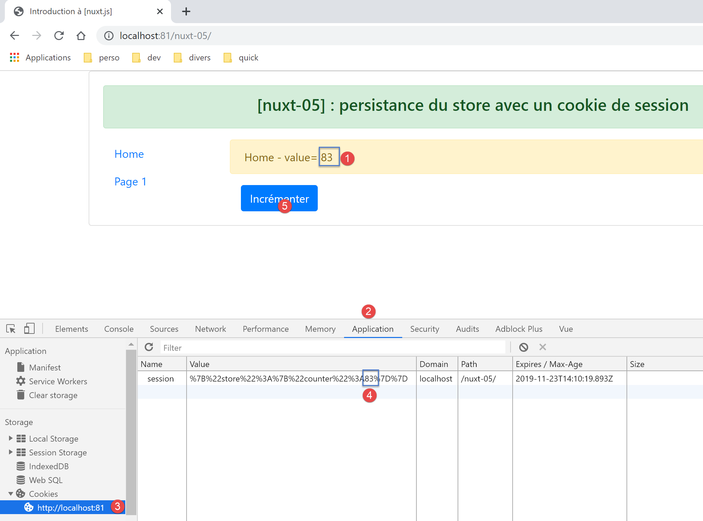

8. Esempio [nuxt-05]: persistenza dello store con un cookie di sessione
Obiettivo: vorremmo che lo store [Vuex] non venisse reinizializzato ad ogni richiesta al server. A tal fine utilizzeremo un cookie di sessione:
- lo store verrà inizializzato dal server e inserito da quest’ultimo in un cookie di sessione;
- il browser client riceverà questo cookie di sessione e lo invierà automaticamente ad ogni nuova richiesta al server;
- il server potrà quindi recuperare questo cookie di sessione e lavorare con lo store in esso contenuto, uno store aggiornato dal client;
8.1. Présentation
Il progetto [nuxt-05] viene ottenuto inizialmente copiando il progetto [nuxt-04]:

Vedremo che cambierà solo il file [store / index.js].
Per utilizzare i cookie con [nuxt], utilizzeremo il modulo [cookie-universal-nuxt] che installiamo insieme a [yarn] in un terminale VSCode:

- nel [4], si digita il comando [yarn add cookie-universal-nuxt];
Viene così aggiunto un nuovo modulo al file [package.json] del progetto [dvp]:
...
},
"dependencies": {
"@nuxtjs/axios": "^5.3.6",
"bootstrap": "^4.1.3",
"bootstrap-vue": "^2.0.0",
"cookie-universal-nuxt": "^2.0.19",
"nuxt": "^2.0.0"
},
8.2. Il file di configurazione [nuxt.config.js]
Affinché [nuxt] possa utilizzare i cookie di [cookie-universal-nuxt], è necessario dichiarare questo modulo nel file di configurazione [nuxt.config.js]:
...
],
/*
** Nuxt.js modules
*/
modules: [
// Doc: https://bootstrap-vue.js.org
'bootstrap-vue/nuxt',
// Doc: https://axios.nuxtjs.org/usage
'@nuxtjs/axios',
// https://www.npmjs.com/package/cookie-universal-nuxt
'cookie-universal-nuxt'
],
...
- alla riga 12, il modulo [cookie-universal-nuxt] viene aggiunto alla tabella dei moduli [6] di [nuxt];
Il file [nuxt.config.js] risulta infine il seguente:
export default {
mode: 'universal',
/*
** Headers of the page
*/
head: {
title: 'Introduction à [nuxt.js]',
meta: [
{ charset: 'utf-8' },
{ name: 'viewport', content: 'width=device-width, initial-scale=1' },
{
hid: 'description',
name: 'description',
content: 'ssr routing loading asyncdata middleware plugins store'
}
],
link: [{ rel: 'icon', type: 'image/x-icon', href: '/favicon.ico' }]
},
/*
** Customize the progress-bar color
*/
loading: { color: '#fff' },
/*
** Global CSS
*/
css: [],
/*
** Plugins to load before mounting the App
*/
plugins: [],
/*
** Nuxt.js dev-modules
*/
buildModules: [
// Doc: https://github.com/nuxt-community/eslint-module
'@nuxtjs/eslint-module'
],
/*
** Nuxt.js modules
*/
modules: [
// Doc: https://bootstrap-vue.js.org
'bootstrap-vue/nuxt',
// Doc: https://axios.nuxtjs.org/usage
'@nuxtjs/axios',
// https://www.npmjs.com/package/cookie-universal-nuxt
'cookie-universal-nuxt'
],
/*
** Axios module configuration
** See https://axios.nuxtjs.org/options
*/
axios: {},
/*
** Build configuration
*/
build: {
/*
** You can extend webpack config here
*/
extend(config, ctx) {}
},
// directory del codice sorgente
srcDir: 'nuxt-05',
// router
router: {
// radice dell'applicazione URL
base: '/nuxt-05/'
},
// server
server: {
// porta di servizio, 3000 per impostazione predefinita
port: 81,
// indirizzi di rete in ascolto, per impostazione predefinita localhost: 127.0.0.1
// 0.0.0.0 = tutti gli indirizzi di rete del computer
host: 'localhost'
},
// ambiente
env: {
maxAge: 60 * 5
}
}
- riga 79: è stata aggiunta al file la chiave [env]. Questa chiave è una parola riservata. Gli elementi dichiarati in questo oggetto sono disponibili a partire dall’oggetto [context.env] negli elementi dell’applicazione;
- riga 80: l’attributo [maxAge] corrisponderà alla durata massima del cookie di sessione, misurata a partire dall’ultima volta in cui il cookie è stato inizializzato. Tale durata è espressa in secondi. In questo caso è stata impostata una durata di 5 minuti;
8.3. Il principio della persistenza dello store
I cookie scambiati tra il client e il server sono disponibili su entrambe le parti (client e server) in:
- [context.app.$cookies], dove è disponibile l’oggetto [context], ovvero praticamente ovunque;
- [this.$cookies] all’interno di una vista;
Si ottiene un cookie specifico con l'espressione [...$cookies.get(‘nom_du_cookie’)]. Si imposta il valore di un cookie con l'espressione [...$cookies.set(‘nom_du_cookie’, valeur_du_cookie)].
Il principio del cookie di persistenza dello store sarà il seguente:
- quando il server inizializzerà lo store nella funzione [nuxtServerInit], lo stato dello store verrà memorizzato in un cookie denominato «session»;
- il cookie ‘session’ farà quindi parte della risposta HTTP del server. È noto che un browser rinvia al server i cookie che quest’ultimo gli ha inviato. Lo fa ad ogni nuova richiesta che invia al server. È inoltre noto che il server invia lo store all’interno della pagina che invia al client;
- all’interno del browser, l’applicazione client recupera lo store inviato dal server e procede quindi a svolgere il proprio lavoro. Faremo in modo che ogni volta che modifica lo store, il suo nuovo stato venga memorizzato nel cookie “session” registrato dal browser;
- se l’utente forza una richiesta al server, il browser client rinvierà automaticamente tutti i cookie che il server gli ha precedentemente inviato, in particolare il cookie denominato «session»;
- quando, a seguito di questa richiesta, il server reinizializzerà nuovamente lo store, recupererà il cookie denominato «session» e inizializzerà lo stato dello store con il valore di quest’ultimo;
- ci sarà quindi continuità dello store tra il client e il server;
8.4. Inizializzazione dello store
Lo store è implementato nel file [store / index.js]:
/* eslint-disable no-console */
export const state = () => ({
// contatore
counter: 0
})
export const mutations = {
// incremento del contatore di un valore [inc]
increment(state, inc) {
state.counter += inc
},
// sostituzione dello stato
replace(state, newState) {
for (const attr in newState) {
state[attr] = newState[attr]
}
}
}
export const actions = {
async nuxtServerInit(store, context) {
// chi esegue questo codice?
console.log('nuxtServerInit, client=', process.client, 'serveur=', process.server, 'env=', context.env)
// si attende la conclusione di una promessa
await new Promise(function(resolve, reject) {
// normalmente qui c'è una funzione asincrona
// la simuliamo con un'attesa di un secondo
setTimeout(() => {
// inizializzazione della sessione
initStore(store, context)
// Operazione riuscita
resolve()
}, 1000)
})
}
}
function initStore(store, context) {
// c'è un cookie di sessione nella richiesta corrente
const cookies = context.app.$cookies
const session = cookies.get('session')
if (!session) {
// nessuna sessione esistente
console.log("nuxtServerInit, initialisation d'une nouvelle session")
// si inizializza lo store
store.commit('increment', 77)
} else {
console.log("nuxtServerInit, reprise d'une session existante")
// si aggiorna lo store con il cookie di sessione
store.commit('replace', session.store)
}
// si inserisce lo store nel cookie di sessione
cookies.set('session', { store: store.state }, { path: context.base, maxAge: context.env.maxAge })
// log
console.log('initStore terminé, store=', store.state)
}
Commenti
- righe 2-5: lo store sarà costituito da un contatore;
- righe 9-11: questo contatore potrà essere incrementato;
- righe 13-17: lo stato dello store potrà essere inizializzato a partire da un nuovo stato. Questa funzione serve a mostrare una possibile inizializzazione dello store quando quest’ultimo non è limitato al solo contatore come in questo caso;
- righe 21-35: la funzione [nuxtServerInit] non è cambiata;
- riga 30: una volta trascorso il tempo di attesa di un secondo, si inizializza lo store utilizzando la funzione delle righe 38-56;
- righe 40-41: si inizia recuperando il cookie denominato "session":
- al primo avvio dell’applicazione e alla prima richiesta inviata al server, questo cookie non esisterà ancora. Verrà quindi creato (riga 53) e inviato al browser del client;
- durante la stessa esecuzione dell’applicazione e in occasione delle richieste n. 2, 3, ... effettuate al server, questo cookie esisterà poiché il browser client lo rinvierà con ogni nuova richiesta effettuata al server;
- durante una seconda esecuzione dell’applicazione e in occasione della prima richiesta inviata al server, questo cookie potrebbe essere presente. Infatti, al termine della fase 1, il cookie è stato memorizzato sul browser con una determinata durata di vita. Se tale durata non è stata superata, il cookie denominato «session» verrà inviato con la prima richiesta inviata al server
In sintesi, per ogni richiesta inviata al server: se il cookie «session» è già memorizzato sul browser del client, il server lo riceverà; in caso contrario, non lo riceverà.
- righe 42-47: se il server non riceve il cookie di sessione, lo store viene inizializzato dalla riga 46;
- poi, alla riga 53, verrà creato un cookie denominato «session» e inserito nella risposta HTTP del server. Il valore del cookie è l’oggetto [{ store: store.state }]. È quindi lo stato dello store, e non lo store stesso, che viene inserito nel cookie di sessione;
- il terzo parametro della funzione [set] è un oggetto di opzioni:
- [path] indica a quale URL dovrà essere rinviato questo cookie. [context.base] è l’URL di base dell’applicazione [nuxt-05]. Quest’ultima è definita nel file [nuxt.config.js]:
// router
router: {
// radice dei URL dell'applicazione
base: '/nuxt-05/'
},
- [maxAge] rappresenta la durata in secondi del cookie sul browser. Trascorso questo periodo, il browser non lo invia più al server. Anche [context.env.maxAge] rimanda a un valore registrato nel file [nuxt.config.js]:
[env] è una chiave riservata del file di configurazione. Qui si imposta la durata a 5 minuti. Tale durata viene misurata a partire dall’ultima volta in cui il browser ha ricevuto il cookie di sessione. Trascorso questo tempo, il cookie non verrà più rinviato al server, che dovrà quindi avviare una nuova sessione;
- righe 48-50: se il server riceve il cookie di sessione, lo stato dello store viene inizializzato con l’oggetto [store] del cookie di sessione. Ricordiamo che questo oggetto contiene lo stato salvato dello store;
- poi, alla riga 53, il cookie di sessione verrà inserito nella risposta inviata al browser client:
- la funzione [get] recupera il cookie di sessione dalla richiesta ricevuta dal server;
- la funzione [set] inserisce il cookie di sessione nella risposta che il server invia al browser client;
- poi, alla riga 53, il cookie di sessione verrà inserito nella risposta inviata al browser client:
8.5. Incremento del contatore dello store
L’incremento del contatore nella pagina [index.vue] avviene nel modo seguente:
// gestione eventi
methods: {
incrementCounter() {
console.log('incrementCounter')
// incremento del contatore di 1
this.$store.commit('increment', 1)
// modifica del valore visualizzato
this.value = this.$store.state.counter
// salvataggio della memorizzazione nel cookie di sessione
this.$cookies.set('session', { store: this.$store.state }, { path: this.$nuxt.context.base, maxAge: this.$nuxt.context.env.maxAge })
}
}
Sul lato client, ogni volta che si modifica lo store, è necessario salvarlo nel cookie di sessione. Infatti, l’utente può richiedere manualmente una URL in qualsiasi momento e in tal caso si deve essere in grado di inviare al server uno store aggiornato. Ecco perché, alla riga 10, dopo aver incrementato il contatore dello store, se ne salva lo stato nel cookie di sessione:
- i cookie sono disponibili nella proprietà [this.$cookies];
- lo stato dello store [this.$store.state] viene salvato nel cookie associato alla chiave [store];
- il percorso del cookie è [context.base]. In una vista, il contesto è disponibile in [this.$nuxt.context];
- la durata del cookie è [context.env.maxAge], disponibile qui nella proprietà [this.$nuxt.context.env.maxAge];
8.6. Esecuzione dell’esempio [nuxt-05]
Avviamo l’applicazione [nuxt-05]:

Le schermate che seguono sono state acquisite con il browser Chrome. Richiediamo l’URL [http://localhost:81/nuxt-05/]. Non dimenticate l’ultimo / dopo /nuxt-05, altrimenti non otterrete i risultati sperati:

- in [4], abbiamo ottenuto il valore iniziale dello store (77);
Esaminiamo i log del browser (F12):

- in [5-6], i log del server;
- in [7], si vede che il server avvia una nuova sessione. Ciò significa che non ha ricevuto alcun cookie di sessione;
- in [8], inizializzazione del contatore con il valore 77;
- in [9], la pagina [index] del server (9) e quella del client (10) mostrano effettivamente lo stesso valore del contatore;
Ora esaminiamo i cookie ricevuti dal browser:

- in [1], selezionate la scheda [Application], quindi l’opzione [Cookies] [2]. Tra tutti i cookie del vostro browser, selezionate quello del dominio [http://localhost:81];
- in [4], il cookie denominato «session». Se non lo trovate, ricaricate la pagina [F5]: forse ne avete superato la durata, che è di 5 minuti;
- in [5], il valore del cookie. Sebbene non sia molto leggibile a causa della codifica dei caratteri { :, si distingue il valore 77 del contatore;
- in [6], il valore URL del cookie: ogni volta che verrà richiesto questo URL, il browser invierà il cookie al server;
- in [7], l’ora di scadenza del cookie. Una volta superata tale ora, il cookie verrà eliminato dal browser;
Assicuratevi di avere questo cookie. Se non lo avete, ricaricate la pagina (F5). Una volta visualizzata la pagina con il cookie, ricaricate nuovamente la pagina (F5). I log risulteranno quindi i seguenti:

Questa volta, in [3], il server ha recuperato correttamente il cookie di sessione. È stato il browser client a inviarglielo.
Ora, incrementate il contatore e, di tanto in tanto, ricaricate la pagina corrente (F5), sia che si tratti di [index] o di [page1], dovreste notare che il contatore non torna a 77 come nell’esempio [nuxt-04], ma mantiene il valore che aveva sul browser client prima del ricaricamento della pagina:


I log del browser sono quindi i seguenti:

Nota: per i test potrebbe essere necessario eliminare il cookie di sessione [5] memorizzato sul browser per ricominciare con una nuova sessione, inizializzata dal server, in occasione della successiva richiesta a quest’ultimo.
Infine, vediamo l'influenza della funzione [incrementCounter] della pagina [index] sul cookie di sessione memorizzato nel browser del cliente:
// gestione degli eventi
methods: {
incrementCounter() {
console.log('incrementCounter')
// incremento del contatore di 1
this.$store.commit('increment', 1)
// modifica del valore visualizzato
this.value = this.$store.state.counter
// salvataggio dello store nel cookie di sessione
this.$cookies.set('session', { store: this.$store.state }, { path: this.$nuxt.context.base, maxAge: this.$nuxt.context.env.maxAge })
}
}
- riga 10: la modifica del contatore si riflette sul cookie di sessione;
Verifichiamo questo punto. Partiamo dalla seguente situazione:

- in [4], il contatore del cookie di sessione riflette correttamente il valore visualizzato [1];
Ora incrementiamo il contatore di una unità: [5]. Il cookie di sessione, che era [4], si evolve come segue:

- in [7]; il contatore del cookie di sessione è effettivamente passato a 84. Per verificarlo, è necessario aggiornare la vista [8]. A tal fine, selezionare un’altra opzione tra [Storage] e [9], quindi riselezionare l’opzione [8]. Il nuovo valore del cookie di sessione dovrebbe quindi apparire;